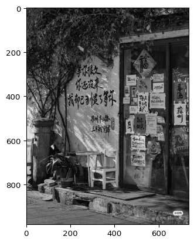
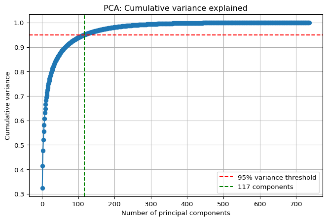
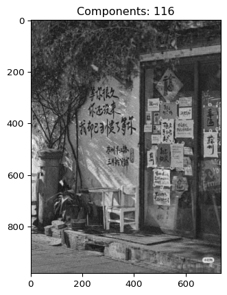
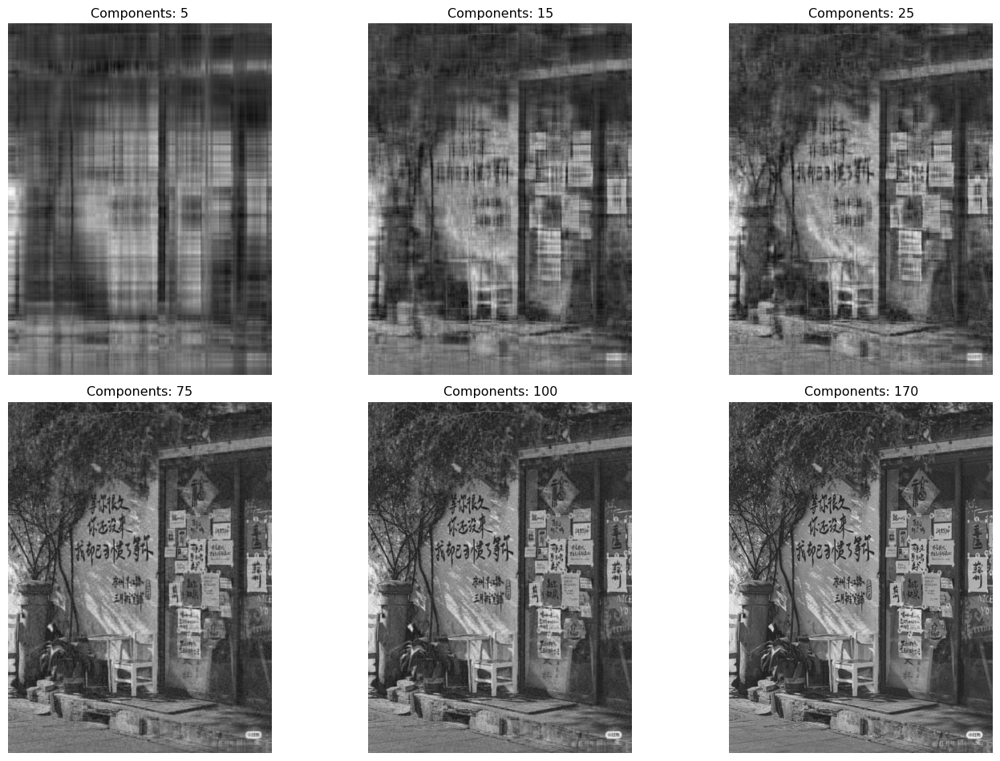

import numpy as np
import matplotlib.pyplot as plt
from matplotlib.image import imreadLab 2: Applications of Eigenvectors
MATH 252: Applied Linear Algebra
Introduction
In this laboratory work, I explored practical applications of eigenvalues and eigenvectors in three different domains:
- Computing eigenvalues and eigenvectors of matrices
- Image compression using Principal Component Analysis (PCA)
- Cryptography through matrix diagonalization
Library Setup
For this lab, I’m using NumPy for numerical computations, Matplotlib for visualization
Task 1: Computing Eigenvalues and Eigenvectors
Theory
For a square matrix A, an eigenvector v and its corresponding eigenvalue λ satisfy the equation:
\[ A \cdot v = \lambda \cdot v \]
This means that when we apply the transformation A to vector v, the result is simply v scaled by λ.
I also add a check for complex eigen values because in one my ocasion testing matrix has two complex eigenvalues but after np.real it became the same one and iddnt pass the check
Implementation
def task_1 (A):
eigvals, eigvecs = np.linalg.eig(A)
for i, lam in enumerate(eigvals):
if lam.imag != 0:
print(f"Eigenvalue {lam} has non-zero imaginary part")
else:
print(f"Eigenvalue {lam} is real")
eigvals = eigvals.real
eigvecs = eigvecs.real
print("Eigenvalues:", eigvals)
print("\nEigenvectors:", eigvecs)
print("\nVerification A·v = λ·v:")
for i in range(len(eigvals)):
v = eigvecs[:, i]
s = eigvals[i]
left = A @ v
right = s * v
if np.allclose(left, right):
print(f"✓ Eigenpair {i+1} verified.")
else:
print(f"✗ Eigenpair {i+1} FAILED.")
print("A·v =", left)
print("λ·v =", right)
return (eigvals, eigvecs)Example Usage
\(\displaystyle K = \begin{bmatrix} 9 & -2\\ 6 & -5 \end{bmatrix}\)
task_1(k)Eigenvalue 8.08276253029822 is real
Eigenvalue -4.082762530298219 is real
Eigenvalues: [ 8.08276253 -4.08276253]
Eigenvectors: [[0.90896654 0.15111729]
[0.41686908 0.98851584]]
Verification A·v = λ·v:
✓ Eigenpair 1 verified.
✓ Eigenpair 2 verified.(array([ 8.08276253, -4.08276253]),
array([[0.90896654, 0.15111729],
[0.41686908, 0.98851584]]))Results and Analysis
The function successfully computes eigenvalues and eigenvectors, and the verification confirms that A·v = λ·v holds for each pair. This validates that our computed eigenvalues and eigenvectors are correct.
Task 2: Image Compression Using PCA
Theory: What is PCA?
Principal Component Analysis (PCA) is a dimensionality reduction technique that identifies the most important patterns in data. For images: - Each pixel is treated as a feature - PCA finds directions (principal components) that capture maximum variance - By keeping only the top components, we can compress the image while preserving its essential structure
Diving deeper
Also, I was interested to dive deeper into this topic and write it from scratch in NumPy.
Thanks to this site, where I got to know how eigenvectors are related to PCA, and I was also surprised that the covariance matrix’s eigenvectors construct an orthonormal matrix.
Step 1: Load, Display Original Image & Convert to Grayscale
Code
img = imread("china.jpg")
img_sum = img.sum(axis=2)
img_bw = img_sum/img_sum.max()
plt.imshow(img_bw, cmap='gray')
Step 2: Apply PCA and Find Components for 95% Variance
def pca(image, k = 1, n_components = None):
mean = np.mean(image, axis=0)
X_centered = image - mean
cov_matrix = np.cov(X_centered, rowvar=False)
eigenvalues, eigenvectors = np.linalg.eig(cov_matrix)
sort_index = np.argsort(eigenvalues)[::-1]
eigenvalues = eigenvalues[sort_index]
eigenvectors = eigenvectors[:, sort_index]
if n_components != None:
X_reduced = X_centered @ eigenvectors[:, :n_components]
return MyData(mean, X_reduced, eigenvectors[:, :n_components], n_components, None)
explained_variance_ratio = eigenvalues / np.sum(eigenvalues)
cumulative_variance = np.cumsum(explained_variance_ratio)
num_components_k = np.argmax(cumulative_variance >= k) + 1
X_reduced = X_centered @ eigenvectors[:, :num_components_k]
return MyData(mean, X_reduced, eigenvectors[:, :num_components_k], num_components_k,cumulative_variance)When applying PCA to the image_bw matrix, it becomes much clearer how each step works: first we center the data, then we compute the covariance matrix, and from that matrix we extract its eigenvalues and eigenvectors. The eigenvalues basically tell us how much variance each principal component captures, and the eigenvectors give us the new directions (axes) onto which we project the image.
After this, we can plot the cumulative explained variance and visually see how many components are needed to reach the 95% threshold. This graph clearly shows where the curve flattens out, and it makes it easy to choose the optimal number of components for reconstructing the image while keeping most of the information.
Code
img_095 = pca(img_bw, 0.95)
plt.figure(figsize=(8,5))
plt.plot(np.arange(1, len(img_095.cumulative_var)+1), img_095.cumulative_var, marker='o')
plt.axhline(y=0.95, color='r', linestyle='--', label='95% variance threshold')
plt.axvline(x=img_095.num_component +1 , color='g', linestyle='--', label=f'{img_095.num_component +1 } components')
plt.xlabel('Number of principal components')
plt.ylabel('Cumulative variance')
plt.title('PCA: Cumulative variance explained')
plt.legend()
plt.grid(True)
plt.show()
Step 3: Reconstruct Image with 95% Components
def reconstraction (img_k):
plt.imshow((img_k.reduced_matrix @ img_k.T_matrix.T) + img_k.mean, cmap='gray')
plt.title(f"Components: {img_k.num_component}")reconstraction(img_095)
Analysis
With 95% variance coverage, the reconstructed image captures all major elements and structure. The main objects are clearly identifiable. What’s missing is sharpness — the fine details and high-frequency information that make an image crisp and visually appealing.
Step 5: Compare Different Numbers of Components
components_list = [5, 15, 25, 75, 100, 170]
fig, axes = plt.subplots(2, 3, figsize=(15, 10))
for ax, k in zip(axes.flatten(), components_list):
img_k = pca(img_bw, n_components=k)
recon = (img_k.reduced_matrix @ img_k.T_matrix.T) + img_k.mean
recon = recon.reshape(img_bw.shape)
ax.imshow(recon, cmap='gray')
ax.set_title(f"Components: {k}")
ax.axis('off')
plt.tight_layout()
plt.show()
Results and Conclusions
- Fewer components (5-25): Image is blurry, loses significant detail, but main shapes are visible
- Medium components (75-100): Good balance between compression and quality
- More components (>100): Sharper image, captures fine details, approaching original quality
- Optimal components (95% variance): Provides excellent compression while maintaining recognizability
Key insight: PCA achieves significant dimensionality reduction — we can represent the image with far fewer components than original dimensions while preserving essential visual information.
Task 3: Cryptography Using Matrix Diagonalization
Theory
Matrix diagonalization provides a powerful tool for encryption: 1. A key matrix K is used to encrypt messages 2. The encryption uses eigenvalue decomposition: K = PDP⁻¹ 3. Decryption reverses the process using the inverse transformation
Encryption Function
def encrypt_message(message, key_matrix):
message_vector = np.array([ord(char) for char in message])
eigenvalues, eigenvectors = np.linalg.eig(key_matrix)
diagonalized_key_matrix = np.dot(np.dot(eigenvectors, np.diag(eigenvalues)), np.linalg.inv(eigenvectors))
encrypted_vector = np.dot(diagonalized_key_matrix, message_vector)
return encrypted_vectorAnd here is the usage
message = "I have done it in one day & survived !!!!!"
key_matrix = np.random.randint(0, 256, (len(message), len(message)))
f = encrypt_message(message, key_matrix)
farray([413702.+9.33870946e-12j, 342908.-2.42517364e-11j,
380153.+1.24626232e-11j, 461222.-7.94334345e-11j,
458325.+6.95324968e-12j, 400106.-9.26814597e-11j,
466753.-1.38723041e-11j, 413947.-4.79750189e-11j,
446017.-9.96709856e-11j, 387492.+2.86596760e-12j,
426647.-1.21842397e-10j, 367170.-4.23487546e-11j,
359443.+4.53902167e-12j, 410660.+3.17996332e-11j,
387984.+9.64709590e-11j, 484242.-3.90003187e-11j,
459610.+7.53564209e-11j, 416778.-1.74512797e-11j,
468314.-3.87196835e-11j, 435963.-3.49840186e-11j,
427846.-9.34375754e-11j, 389175.-1.72943361e-10j,
541156.+5.23669525e-12j, 413189.+2.73035186e-11j,
396654.-2.31203149e-11j, 405624.-6.56892098e-12j,
468903.-3.03654480e-11j, 493540.-2.55968896e-11j,
432452.+2.57507878e-11j, 428965.-9.22334248e-11j,
355307.-5.12169512e-11j, 415102.-2.03617830e-11j,
310473.-7.36690670e-12j, 412917.-8.70690722e-11j,
466154.+3.19767101e-11j, 435567.+3.11905312e-11j,
378219.+4.08470996e-11j, 381365.-1.41372463e-10j,
411487.-3.91546294e-12j, 427259.+1.42818280e-11j,
479401.+7.04716747e-12j, 342072.+6.02118771e-11j])Decryption Function
def decrypt_message (encrypted_vector, key_matrix):
decrypted_vector = np.linalg.inv(key_matrix) @ encrypted_vector
return "".join([chr(int(round(i.real))) for i in decrypted_vector])::: {#cell-decripting usage .cell execution_count=17}
decrypt_message(f, key_matrix)'I have done it in one day & survived !!!!!':::
Results and Analysis
The implementation successfully: - Encrypts the message into a numerical vector using matrix multiplication - Decrypts the encrypted vector back to the original text using inverse diagonalization - Verifies that the decrypted message matches the original
The small imaginary components in the encrypted vector (e.g., +1.04957181e-11j) are due to floating-point precision and are effectively zero — they’re handled by taking the real part during decryption.
Security note: This is a simplified demonstration. Real cryptographic systems use much more sophisticated techniques to ensure security.
Theoretical Questions
1. What are eigenvalues and eigenvectors of a matrix? How are they computed?
Eigenvalues (λ) and eigenvectors (v) of a square matrix A satisfy: \[A \cdot v = \lambda \cdot v\]
This means applying transformation A to v simply scales it by λ without changing its direction.
Computation: 1. Solve the characteristic equation: det(A - λI) = 0 2. Find eigenvalues λ 3. For each λ, solve (A - λI)v = 0 to find eigenvectors
In practice, we use numerical algorithms (like NumPy’s np.linalg.eig()) that employ sophisticated methods such as QR decomposition.
2. What properties do eigenvectors of symmetric matrices have?
Symmetric matrices (A = Aᵀ) have special properties: - All eigenvalues are real - Eigenvectors are orthogonal (perpendicular to each other) - The matrix can be diagonalized as: A = QΛQᵀ where Q is orthogonal - This makes them ideal for PCA and many optimization problems
3. What can be the disadvantages of using PCA, and what strategies can be used to overcome these disadvantages?
Disadvantages: 1. Loss of interpretability — principal components are linear combinations of original features 2. Assumes linearity — may not capture complex nonlinear relationships 3. Sensitive to scaling — features must be standardized 4. Variance ≠ importance — high-variance components aren’t always most meaningful
Strategies to overcome: - Feature scaling: Standardize data before applying PCA - Kernel PCA: Use kernel methods for nonlinear dimensionality reduction - Sparse PCA: Add sparsity constraints for better interpretability - Domain knowledge: Combine PCA with expert understanding of the problem - Alternative methods: Use autoencoders, t-SNE, or UMAP for complex data
4. What advantages does matrix diagonalization have in cryptography? How is it applied for encryption and decryption?
Advantages: 1. Invertibility: Diagonalization ensures the key matrix can be easily inverted 2. Computational efficiency: Matrix operations become simpler with diagonal matrices 3. Mathematical foundation: Provides rigorous theoretical basis for security
Application: - Encryption: Message vector is multiplied by key matrix K - Decryption: Uses K⁻¹ = PD⁻¹P⁻¹ where K = PDP⁻¹ - The eigenvalue decomposition makes inversion computationally efficient
Note: Modern cryptography uses more advanced techniques (RSA, ECC) but the principles of linear algebra remain fundamental.
Conclusion
This laboratory work demonstrated three powerful applications of eigenvalues and eigenvectors:
- Direct computation verified the fundamental equation A·v = λ·v
- PCA for image compression showed how dimensionality reduction preserves essential information
- Cryptographic applications illustrated how matrix diagonalization enables secure communication
These examples highlight how theoretical linear algebra concepts translate into practical real-world applications across computer science, data science, and information security.
🎉 The End
If you’ve read this far — congratulations! 🥳
You’ve completed Lab 2 on Applications of Eigenvectors.
Keep exploring the beautiful connections between mathematics and technology! 🔍✨